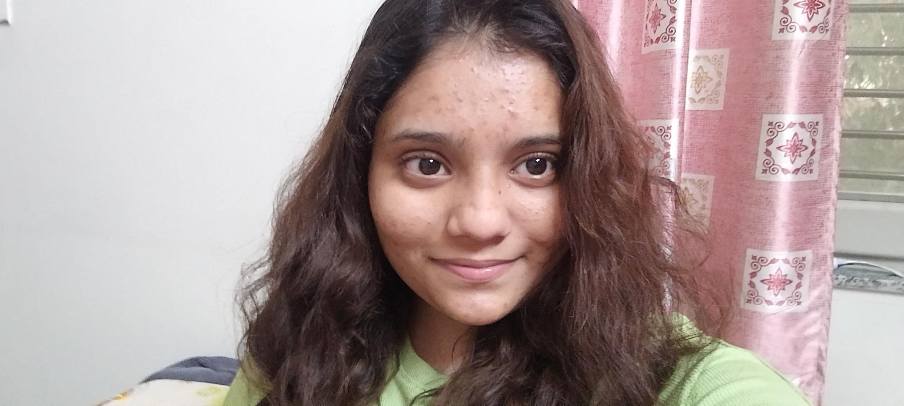
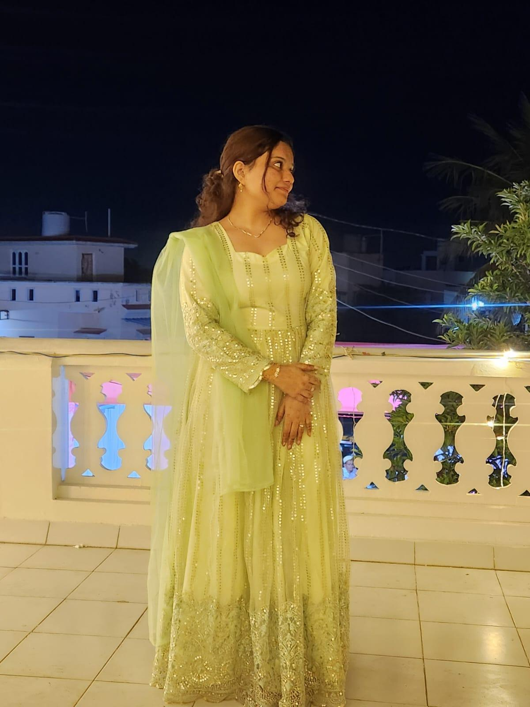
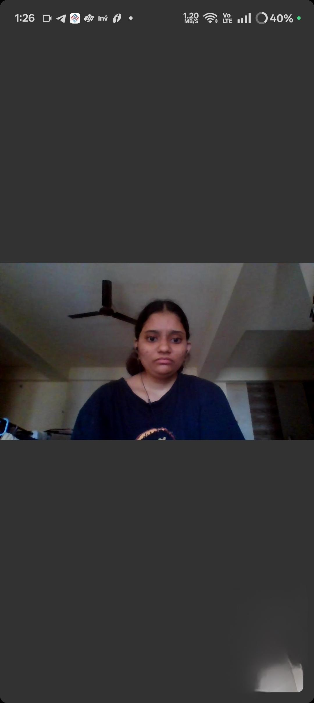

Fatuuuuuu.My Entire Universe.
This is my favorite Section. Every photo here is a reminder that the best view in the world isn't a destination---it's just looking at you.
Exhibit 01 // Lethal Grace
You are in "Trouble" Gaze
You look completely mind blowing angel here, but I Know this if you are reciving Side-eye Man you are in trouble jk :) : ) . Absolutely majestic.
"I love you more than you love buying clothes or watching Splitvilla or eating Oat or buying makeup hehe "
Exhibit 02 // The Boss
CEO of my Heart
Technically we're a team, but we both kown chalti kiski hai .My Super Confident and Favourite Chota Don

"Science says the sun is 93 million miles away, but clearly they haven't seen you glow up a room."

